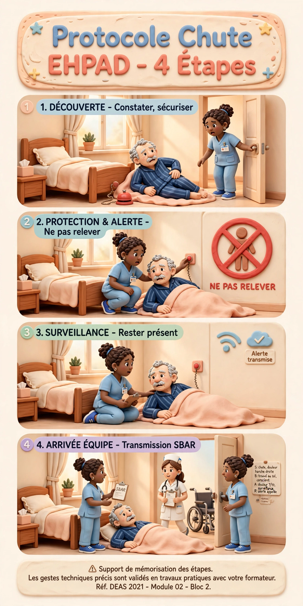

⚠️ Support de mémorisation des étapes.
Les gestes techniques précis sont validés en travaux pratiques avec votre formateur.
Réf. DEAS 2021 · Module 02 · Bloc 2
🔍 Facteurs de risque à repérer
Facteurs intrinsèques (liés à la personne)
- Âge avancé, antécédents de chute dans les 3 derniers mois
- Troubles de l'équilibre et de la marche
- Troubles cognitifs (confusion, démence)
- Hypotension orthostatique — voir PraxisMobilité pour la fiche dédiée
- Polymédication : psychotropes, diurétiques, antihypertenseurs
- Déficits sensoriels : vue, audition, sensibilité plantaire
- Dénutrition, fonte musculaire, ostéoporose
Facteurs extrinsèques (liés à l'environnement)
- Sol glissant, éclairage insuffisant la nuit
- Chaussures inadaptées ou absentes
- Mobilier instable, absence de barres d'appui
- Matériel encombrant : câbles, bassins, urinals laissés à terre
- Lits trop hauts, barrières mal positionnées
- Sonnette hors de portée
📏 Échelle de Morse — Évaluation interactive
Complétez les 6 items pour Mme Dupont, 82 ans, chutée il y a 6 semaines, marchant avec une canne, sous antihypertenseurs, tendant à surestimer ses capacités.
✅ Rôle AS — Prévention et CAT après chute
Avant le déplacement
- Vérifier que le patient porte des chaussures fermées antidérapantes
- Laisser le patient s'asseoir au bord du lit 1 à 2 minutes avant de se lever (pause orthostatique)
- Dégager le passage, s'assurer que l'aide technique est à portée
Pendant le déplacement
- Accompagner sans se substituer : encourager l'autonomie
- Rester à côté, surveiller la démarche et l'essoufflement
Après une chute
- Ne pas relever immédiatement — évaluer d'abord
- Appeler l'IDE ou le médecin avant toute mobilisation
- Rester avec la personne, la rassurer
- Rédiger une fiche d'événement indésirable (FEI)
- Transmettre : heure, lieu, circonstances, état du patient
📊 Les 4 stades de l'escarre
Érythème persistant sur peau intacte. La rougeur ne blanchit pas à la pression du doigt. Peau encore intacte mais en danger.
Plaie superficielle : perte partielle de l'épiderme ou du derme. Peut ressembler à une phlyctène ou une érosion.
Perte de substance complète jusqu'aux tissus sous-cutanés. Le muscle n'est pas visible. Risque infectieux majeur.
Perte totale avec exposition de l'os, du tendon ou du muscle. Risque d'ostéite. Pronostic vital possible.
⚠️ L'AS signale immédiatement tout érythème persistant (stade 1) à l'IDE — c'est à ce stade que la prévention est encore pleinement efficace.
🗺️ Zones d'appui selon la position
Zones clés : talons · sacrum · ischions · trochanters · malléoles · occiput · omoplates
🛡️ Échelle de Braden — Évaluation du risque
Score de 6 à 23 pts — Plus le score est bas, plus le risque est élevé.
| Item | 1 pt (risque max) | 2 pts | 3 pts | 4 pts |
|---|---|---|---|---|
| Perception sensorielle | Absente | Très limitée | Légèrement limitée | Normale |
| Humidité cutanée | Constamment humide | Souvent humide | Occasionnelle | Rarement humide |
| Activité | Alité | Limité au fauteuil | Marche parfois | Marche souvent |
| Mobilité | Immobile | Très limitée | Légèrement limitée | Non limitée |
| Nutrition | Très pauvre | Inadéquate | Adéquate | Excellente |
| Friction / cisaillement | Problème | Problème potentiel | Pas de problème | — |
🔄 Protocole de prévention — Rôle AS
Changements de position
- Toutes les 2 à 3 heures selon protocole et état du patient
- Talons systématiquement surélevés : coussin sous mollets, pas sous talons
- Inclination du lit : jamais > 30° pour éviter le cisaillement sacré
- Utiliser coussins de positionnement et oreillers entre les genoux
Soins de peau
- Inspecter la peau à chaque soin : plis, zones d'appui, plaies
- Pas de massage sur les zones rouges — risque d'aggravation
- Sécher soigneusement sans frotter, hydrater si peau sèche
- Changer rapidement les protections souillées
⚖️ Cadre légal — Ce que l'AS doit savoir
- Toute contention est une restriction de liberté — droit fondamental protégé par la loi
- Elle nécessite obligatoirement une prescription médicale
- Le consentement du patient ou de son représentant légal est recherché
- Elle doit être tracée dans le dossier : indication, type, horaires, surveillance
- Elle est réévaluée régulièrement — durée toujours limitée
- L'AS ne décide, ne pose, ne retire jamais une contention sans ordre de l'IDE
📋 Types de contention et surveillance AS
🛏️ Barrières de lit
- La plus fréquente en EHPAD
- Surveiller que le patient ne tente pas de passer par-dessus
- Demi-barrières préférables aux barrières complètes
🪑 Ceinture de fauteuil
- Indiquée si risque de glissement
- Vérifier positionnement toutes les 2h
- Ne jamais attacher aux parties mobiles
🤲 Attaches de poignets
- Contentions les plus restrictives
- Surveillance toutes les heures
- Vérifier circulation, chaleur, absence de plaie
🌿 Alternatives à proposer
- Tapis de détection de chute
- Lit abaissé au maximum
- Stimulation, présence, réassurance
- Activités occupationnelles si confusion
👁️ Surveillance obligatoire par l'AS
- État circulatoire des zones contenues : couleur, chaleur, sensibilité
- Intégrité cutanée sous la contention
- État psychologique : agitation, détresse, cris
- Toute tentative d'arrachage ou de fuite
- Besoin d'élimination — ne jamais laisser attendre
- Confort général : hydratation, position, douleur
⚠️ Les formes de maltraitance
🤛 Physique
Coups, pincements, gifles, brûlures, contention abusive, soins douloureux intentionnels, privation de nourriture.
🧠 Psychologique
Humiliations, insultes, menaces, infantilisation, isolement, chantage affectif, dénigrement devant les autres.
💰 Financière
Vol, abus de faiblesse, pression pour modification de testament, utilisation non autorisée de l'argent.
😶 Négligence
Active (refus de soin) ou passive (oubli involontaire). Abandon, non-réponse aux appels, hygiène négligée.
La maltraitance institutionnelle existe aussi : routines imposées, langage condescendant systématique, non-respect de l'intimité.
🔍 Signes d'alerte à repérer
Signes physiques
Signes comportementaux
📢 Procédure de signalement
Consignez les faits avec précision : date, heure, ce que vous avez vu ou entendu. Restez factuel — ne pas interpréter, ne pas interroger la personne.
Informez l'IDE référent puis le cadre de santé. Ne restez jamais seul avec une suspicion de maltraitance.
Assurer la sécurité immédiate de la personne. Ne jamais promettre de garder le secret.
Procureur de la République, Conseil départemental, ou le numéro national 3977 (maltraitance personnes âgées et handicapées).
Tout signalement est tracé dans le dossier. Vous êtes protégé par la loi si vous signalez de bonne foi.
💡 Bientraitance — l'autre face de la médaille
- Respecter le rythme et les choix de la personne
- S'adresser par son nom, maintenir le vouvoiement si elle le préfère
- Expliquer chaque soin avant de le faire
- Préserver son intimité en permanence
- Valoriser ses capacités restantes plutôt que ses limitations
💧 Risque de déshydratation
Populations à risque
- Personnes âgées : sensation de soif diminuée, réserves hydriques réduites
- Fortes chaleurs, fièvre, diarrhée, vomissements
- Traitements diurétiques
- Troubles de la déglutition (refus de boire)
Signes à repérer
Rôle AS
- Proposer à boire régulièrement sans attendre la demande (verre toutes les heures)
- Varier les boissons : eau, jus, potage, compote, eau gélifiée si troubles déglutition
- Surveiller la diurèse — signaler si < 500 mL/jour
- Transmettre à l'IDE tout signe de déshydratation
🍽️ Risque de dénutrition
Signes à surveiller
Rôle AS
- Peser selon prescription, à jour et heure fixes, avec les mêmes vêtements
- Noter les quantités consommées et les refus dans le dossier
- Installer confortablement avant le repas, respecter les textures prescrites
- Ne jamais faire manger trop vite — risque de fausse route
- Transmettre à l'IDE et à la diététicienne toute variation significative
- Proposer des collations entre les repas si prescrites
🦠 Prévention des infections — Hygiène des mains
Les 5 moments de l'OMS
SHA vs lavage au savon
✅ SHA (Solution Hydro-Alcoolique)
- Utilisation préférentielle dans les soins
- Frotter toutes les surfaces 30 secondes jusqu'à séchage complet
- Ne pas rincer
🚿 Lavage au savon — obligatoire si
- Mains visiblement souillées
- Clostridium difficile ou Norovirus (SHA inefficace sur les spores)
- Sortie des toilettes
💡 SHA inefficace sur C. difficile et Norovirus — lavage au savon obligatoire dans ces cas.